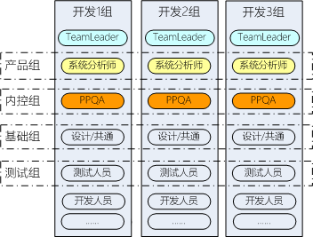
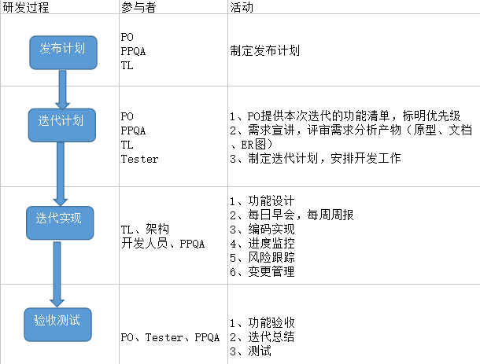

<h2>目标</h2>
<ul>
<li>实现领导层、产品组的产品规划</li>
<li>积累 基础技术，提升平台的支撑能力</li>
<li>提升员工的能力、成就感</li>
</ul>
<h2>组织结构</h2>
<p></p>
<ul>
<li>
<p>研发分为基础开发组、业务开发组。基础组负责平台等共通组件开发，业务组负责业务产品开发。</p>
</li>
<li>
<p>开发小组由TL、PO、PPQA共同领导，分别负责技术、业务、管理。</p>
</li>
<li>每一个产品必须有一个PO，一个开发组可以负责多个产品开发实现。</li>
<li>PPQA非传统PPQA，主要负责迭代过程监控与管理，具体包括开发流程的计划、评审、测试、发布、风险等关键节点的监控和管理。</li>
<li>每一个业务开发组必须最少有一名基础组成员参与，主要负责共通组件开发，协助TL完成功能设计。</li>
<li>在测试组人员允许的情况下，每个业务开发组最好有一名测试人员来负责每轮迭代的测试。</li>
</ul>
<h2>关键流程</h2>
<p></p>
<h3>制定迭代功能清单</h3>
<h3>制定迭代计划</h3>
<h2>实时路线图（RoadMap）</h2>
<ul>
<li>调整座位，准备环境</li>
<li>整理现阶段的任务，制定下阶段（两周）的开发计划</li>
<li>PPQA督促产品团队制定产品功能清单，发布计划，多轮迭代计划</li>
</ul>
<h2>展望</h2>
<ul>
<li>团队提升：三性</li>
<li>产品提升：</li>
</ul>